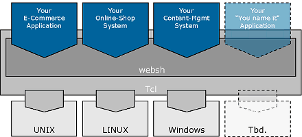
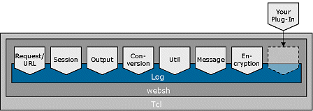

|
|||||||||||
|
|
Websh described |
characteristics |
|||||||||||||||||||||||||||
|
Websh is a rapid development environment for building
powerful, fast, and reliable web applications. Websh is
versatile and handles everything from HTML generation to
data-base driven one-to-one page customization. We have been
using it for years for virtually all our customer projects,
which typically are E-commerce shops or electronic banking
applications. Websh is extensible and portable, and its
comprehensive set of commands is quickly learned.
Open Source SoftwareWebsh is released as open source software. The source code as well as binaries for a selection of platforms are available for download for free. Websh users have full control over and insight into Websh. This is protection of investment.Apache 2 moduleWebsh is scalable. Its CGI interface ensures that Websh can be employed virtually everywhere, using off-the-shelf web servers. If performance is key, the Websh Apache 2 module gives you lightening-fast one-to-one content. And the nice thing: for both the CGI environment and for the Apache 2 module, you use exactly the same Websh application. |
|
||||||||||||||||||||||||||
|
|
Websh history |
|||||||||||||||||||||||||||
|
The development of Websh began in 1996. Websh
has since been successfully used in virtually all customer
projects of Netcetera. Why does a technology-driven company
like Netcetera rely on a tool with such a slow release cycle ?
Good design pays off. While the Internet changes at a rapid pace, the underlying technologies remain stable, and Websh has been built to handle them. The practical experience gained from the day-to-day use of Websh has now been channeled into the current release, Websh 3. |
||||||||||||||||||||||||||||
|
|
Based on Tcl |
|||||||||||||||||||||||||||
|
Websh is based on the Tool Command Language (Tcl,
pronounced "tickle"). Tcl is a fast, comprehensive
scripting language as well as a library. The Tcl
development started 1987 at the University of California at
Berkeley with John K.Ousterhout. Development continues through a large group of volunteers coordinated by the Tcl Core Team, who also perform the majority of the work. The decision to build Websh on top of Tcl has several advantages which can be summarized as "flexibility". Figure 1 gives an overview of the Websh Architecture.  Figure 1 - Websh Architecture Most Web-based applications need to separate items with a high change rate from other, static parts. In other words, configurability is needed. For example, HTML output must be changeable without the need to recompile the application. Using Tcl as an embedded system, such configurable parts can be designed as Tcl code snipplets and configuration files. Web-based applications demand a high degree of flexibility or extensibility . In particular, it must be straight-forward to add new functionality. Websh does not manage data base access, for example, but rather relies on proven Tcl extensions for this task. Choosing Tcl for Websh thus ensures the extensibility of Websh itself. Finally, Web-based applications must be deployable on a wide range of platforms. Tcl has been ported to all important operating systems. Embedding Tcl thus ensures the portability of Websh. |
||||||||||||||||||||||||||||
|
|
Websh Design |
|||||||||||||||||||||||||||
|
Websh has a modular design, particularly for thread
safety.Each module manages its own data, and locking
mechanisms are used where needed. Websh modules are
extensible through plug-Ins. Figure 2 gives an overview of the Websh modules. In the following, each module is shortly described.  Figure 2 - Websh 3 modules request and url managementThe Websh application developer does not need to get involved with the details of the HTTP protocol or the parsing of data. Rather, he concentrates on the application logic and leaves the rest to Websh. This module parses input from the browser, e.g. HTML form data, and makes it available to Websh.One of the distinctive features of Websh is its state management capability. Web-based applications often need to carry information from one HTTP transaction to the next. As an example, the user will choose his preferred language. Applications for electronic commerce systems, Internet banking and so on also need mechanisms to identify and group transactions into longer transactions which cover more than one single HTTP request and its response. This Websh module introduces state. session managementWebsh provides sessions for transaction data management as well. For example, a Websh application would store the items in a "shopping cart" in a session context. The session management module handles session data, which can be stored on the client side using Netscape cookies; or on the server side using the file system (fs), a data base management system (DBMS), or the Netcetera cache manager (ncm). The module provides a uniform interface to access the session context regardless of the storage used. It is implemented in Tcl and makes extensive use of namespaces.output managementWebsh provides commands to format HTTP-compliant output to be sent back to the client. output can be directed to Tcl channels or to Tcl variables for buffering purposes. The output management module is fully configurable to give the user control over the generated output.conversionNeed HTML compliant input ? Want to send data via an URL, or in a form field ? This module converts umlauts to their proper HTML entities or their URI encoded equivalent, for example. As do all Websh modules, the conversion module manages its data on its own, thus ensuring thread safety.security by encryptionThe proper handling of sensitive data is crucial for banking or E-commerce applications. Three aspects are important: Data transfer, data storage, and session hijacking. This Websh module provides the commands to encode and decode data, and to manage pass-phrases and encryption methods.Websh relies on well-known and well-tested encryption methods, which are made available to Websh by means of plug-ins. messages on streamsThis Websh module implements a simple protocol to facilitate communication over Tcl channels. Particularly, it is used for communication over TCP/IP connections.logging facilityWeb applications need a versatile logging mechanism to report errors and other information. In fact, Websh itself makes heavy use of the logging facility. Logging must be easy to use, fast, and extensible. Typically, Websh applications handle hundreds of requests per second, and the logging facility has been designed with this kind of load in mind.The logging module is extensible through plug-Ins. Find more information in the Websh white paper. |
||||||||||||||||||||||||||||
|
|
|
| description | documentation | support | resources | download | credits | copyright | |
|
|
|
| © Websh - an Apache Tcl project - part of the Apache Software Foundation | |